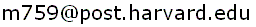

|
Finite Geometry Notes
|
"Qui nimium probat, nihil probat. That is, if you prove too much, you prove nothing. I cannot tell in which sense the inventor of this classical saying intended to use it, but I wish to explain a meaning of the sentence that I found extremely helpful when I started doing some work in mathematics, and ever since. The sentence reminds me of one of the most useful signs by which we can judge the workability of a plan of the solution.
Here is the situation: you wish to prove a proposition. This proposition consists of a conclusion and a hypothesis which has several clauses, and you know that each one of these clauses is necessary to the conclusion, that is, none of them can be discarded without rendering the conclusion of the proposition invalid. You have conceived a plan of the proof, and you are weighing the chances of your plan. If your plan does not bring into play all the clauses, you have to modify your plan or reject it: if it would work as it is and prove the conclusion, although it leaves aside this or that clause of the hypothesis, it would prove too much, that is, something false, and so it would prove nothing.
I said that your plan should bring into play those clauses. I mean that mere lip-service is not enough, just mentioning them does not do: your plan should provide for essential use of each clause in the proof. The framework intended to support the conclusion cannot stand up unless it has a solid foothold in each clause of the hypothesis.
It may be very difficult to devise a plan that duly brings into play all the clauses of the hypothesis. Therefore, if a plan promises to catch all those clauses, we greet it with relief: there is an excellent sign, a strong indication that the plan may work.
.... If you prefer a French sentence to a Latin saying, here is one: 'La mariee est trop belle'; the bride looks too good. I do not think that I need to amplify this; after the foregoing the reader can picture all the details to himself."
-- George Polya, Patterns of Plausible Inference (Volume II of Mathematics and Plausible Reasoning), Princeton University Press, 1954, pages 162-163
In Dharwadker's attempted proof of the four-color conjecture, the clauses of the hypothesis include the assumption that N is the minimal number of colors that suffices to properly color any map on the sphere. But a first reading of Dharwadker's attempted proof does not reveal how Dharwadker uses these properties of N in any essential way. Apparently the only place they appear in the proof is in the fourth sentence of the paragraph that precedes Lemma 4. This sentence is, "Note that the subsets 0,1,...,N-1 are each nonempty (since [the map] m(N) requires all of the N colours to be properly coloured) and form a partition of the set of regions of m(N) (by virtue of proper colouring)."
This sentence is what Polya calls "mere lip-service," "just mentioning" the clauses of the hypothesis.
If these remarks are wrong, please notify the author at

Page last maintained November 28, 2000; created November 28, 2000.